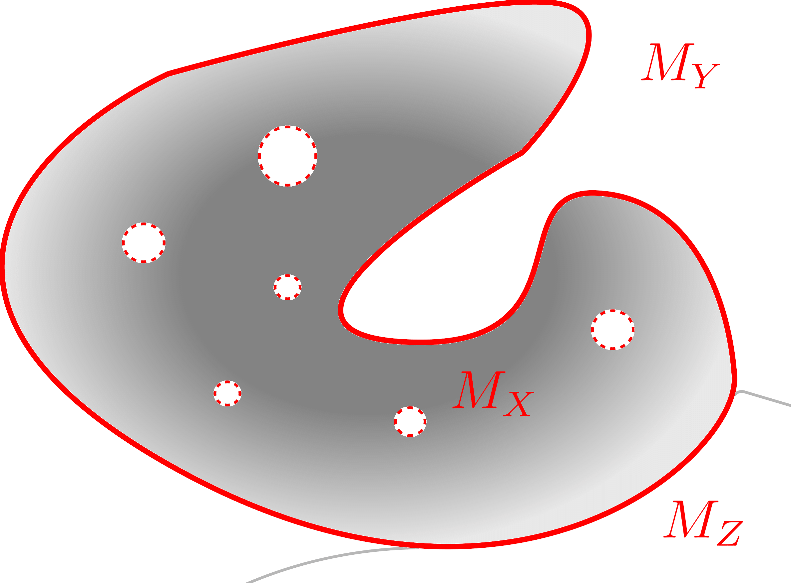
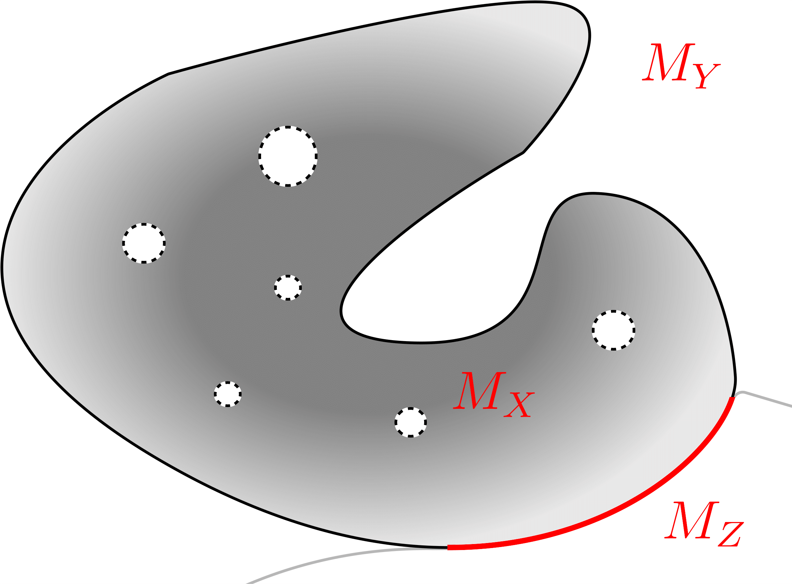

Boundary Testing Approaches
Most boundary-testing methodologies focus on the untargeted case, where the goal is simply to find any test case that crosses the decision boundary—regardless of its location. In contrast, Mimicry can operate not only in untargeted, but also in a targeted fashion, directing tests toward specific classes. This targeted capability is particularly valuable when only a limited subset of class pairs yield meaningful semantic boundaries.

Untargeted Boundary Testing
